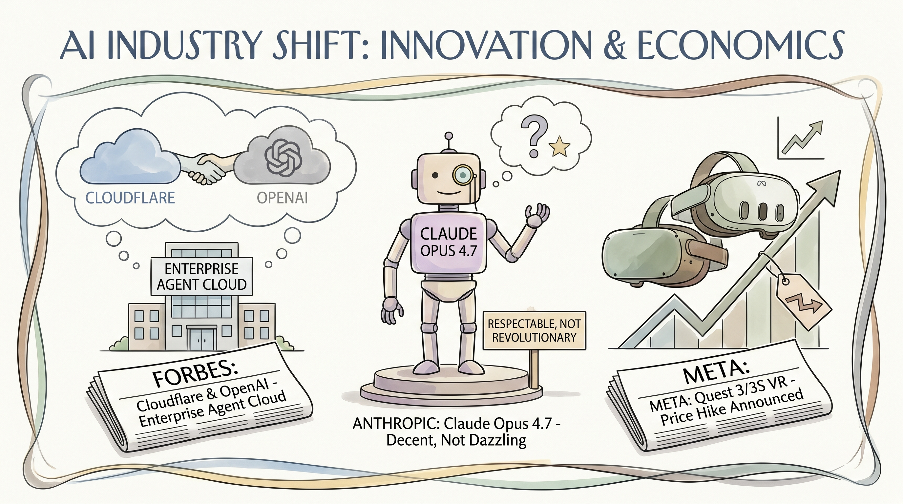

Cloudflare与OpenAI联合推出面向企业的Agent Cloud服务。
两克伴AIGC日报
2026-04-17 星期五

本期关注：Cloudflare与OpenAI联合推出企业Agent Cloud服务，Anthropic发布性能领先的Claude Opus 4.7模型，Meta Quest因成本涨价，Stellantis与微软深化AI合作，同时企业AI运营层战略重要性凸显，OpenAI内部使命争议持续。
📰 行业动态
Anthropic发布Claude Opus 4.7模型，旨在解决企业级障碍。
Meta宣布Quest 3/3S VR头显售价上调，因制造成本增加。
Stellantis与微软合作，加大AI战略投入。
OpenAI面临内部争议，其使命是否符合初衷待定。
🔥 今日焦点
Anthropic最新发布的Claude Opus 4.7模型，于2026年4月16日正式推出，是该公司迄今为止最强大的通用模型。该模型在多个关键基准测试中表现出色，包括代理编码、跨学科推理、扩展工具使用和代理计算机使用等方面，超越了Opus 4.6、GPT-5.4和Gemini 3.1 Pro等知名模型。尽管其性能略逊于Claude Mythos Preview（目前仅限于Project Glasswing合作伙伴使用），但Claude Opus 4.7的发布仍对AI领域产生了重要影响。
Claude Opus 4.7的问世，标志着AI技术迈向更高水平。该模型在多个领域的应用前景广阔，有望推动AI在工业、医疗、教育等领域的深入发展。其强大的推理能力和扩展工具使用能力，为AI在复杂场景下的应用提供了有力支持。此外，Claude Opus 4.7的发布也意味着AI领域竞争愈发激烈，各大公司纷纷加大研发投入，以争夺市场份额。
在《将企业AI视为运营层》一文中，作者Dr. Wael Salloum指出，企业AI领域存在一个常被忽视的裂缝，即运营层的所有权问题。当前公众讨论多集中于基础模型和基准测试，如GPT与Gemini的对比、推理分数以及边际能力提升。然而，实际中更具持久优势的是结构性的：谁掌握了应用、治理和改进智能的运营层。
这一观点的重要性在于，运营层是企业AI应用的核心，它决定了AI如何与业务流程结合，如何被管理和优化。拥有运营层的企业能够更好地将AI技术融入日常运营，从而实现效率和创新的提升。对AI领域的影响是深远的，它提醒业界，单纯的技术突破并非企业AI成功的唯一关键，运营层的构建和管理同样至关重要。这将对企业AI的发展方向产生导向性影响，促使更多企业关注AI的运营层建设，以实现AI技术的有效落地和应用。
标题：Show HN：AI代理运行时安全（注入、工具滥用、数据泄露）
内容：本文介绍了一个开源项目，旨在解决生产环境中大型语言模型（LLM）面临的运行时安全问题。项目作者dshapi指出，当前LLM系统虽然赋予了模型调用工具、访问数据和做出决策的能力，但缺乏有效的运行时安全层。为此，他构建了一个系统，作为AI行为的控制平面，而非仅限于基础设施。
📚 深度长文
llm-anthropic 0.25版本发布，带来了多项重要更新。首先，新增了支持高思考强度的模型“claude-opus-4.7”，为用户提供更深入的思考体验。其次，引入了“thinking_display”和“thinking_adaptive”布尔选项，允许用户自定义输出展示方式，进一步提升用户体验。此外，默认最大token数提升至每个模型允许的最大值，优化了模型性能。值得注意的是，版本更新不再使用过时的beta header，确保了与旧模型的兼容性。本文深入探讨了llm-anthropic 0.25版本的更新内容，为AI从业者提供了宝贵的参考价值。
---
本文探讨了AI模型在图像生成方面的最新进展。作者通过对比Alibaba的Qwen3.6-35B-A3B和Anthropic的Claude Opus 4.7两个模型，展示了Qwen3.6-35B-A3B在生成更逼真的图像方面的优势。作者使用20.9GB的Qwen3.6-35B-A3B-UD-Q4_K_S.gguf模型，在MacBook Pro M5上通过LM Studio插件进行测试，并提供了详细的生成图像的截图和文字描述。文章深入分析了模型在图像生成方面的独特见解，为AI从业者提供了宝贵的参考。阅读本文，读者可以了解到AI图像生成领域的最新动态，以及不同模型在性能上的差异，对提升自身在AI领域的专业素养具有重要意义。
---
本文深入探讨了设计适用于现实世界的合成数据集的方法，从第一性原理出发，提出了机制设计和推理的新视角。文章核心观点在于，通过构建与真实世界高度相似的合成数据集，可以有效地提升AI模型的泛化能力和鲁棒性。作者首先分析了现有合成数据集的局限性，指出其往往缺乏对现实世界复杂性的充分模拟。在此基础上，文章提出了基于第一性原理的机制设计方法，通过深入挖掘现实世界的内在规律，构建出更加贴近真实场景的数据集。
文章的关键论据包括：1）现实世界数据的复杂性；2）现有合成数据集的局限性；3）第一性原理在机制设计中的重要性。作者通过实例分析，展示了如何利用第一性原理构建合成数据集，并验证了其在提升AI模型性能方面的有效性。
🛠️ 产品推荐
Show HN：agent-hub是一款开源工具，旨在实现与本地或远程机器上运行的AI代理（如Claude Code、Codex、Hermes、OpenClaw等）的集中沟通。该产品适用于已部署代理的环境，为用户提供便捷的一站式访问与使用。agent-hub旨在解决跨多个设备切换代理的繁琐问题，通过其开放性和灵活性，助力技术从业者高效管理AI代理。
---
Show HN推出了一款创新性AI驱动的度假租赁平台，颠覆传统模式，实现0%佣金。该平台通过AI智能代理，简化预订流程，让用户无需依赖Airbnb等平台，即可轻松预订心仪的度假房源。此举有效解决了传统度假租赁平台佣金高昂、流程繁琐等问题，为用户提供更便捷、更经济的度假体验。产品利用AI技术优化用户体验，具有显著创新性，是技术从业者的理想选择。
---
Show HN: A native Rust TUI for Claude Code，一款基于Rust语言重写的原生终端用户界面（TUI）产品。该产品旨在解决 Claude Code 在处理大量并行代理、大型差异流和长工具调用链时，前端性能瓶颈问题。通过Ratatui框架构建，与Anthropic官方Agent SDK通过TypeScript桥接，确保遵循Anthropic的使用条款。产品支持工具调用、文件编辑和权限管理等功能，为用户提供高效、流畅的 Claude Code 使用体验。